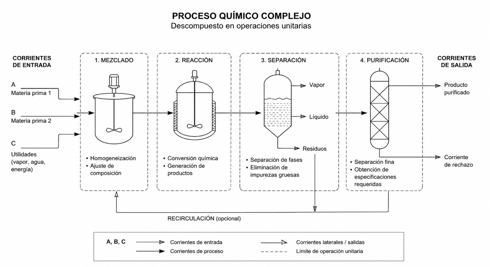
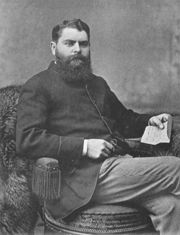
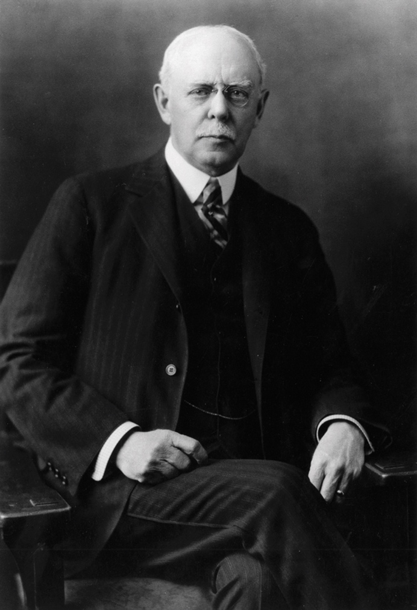
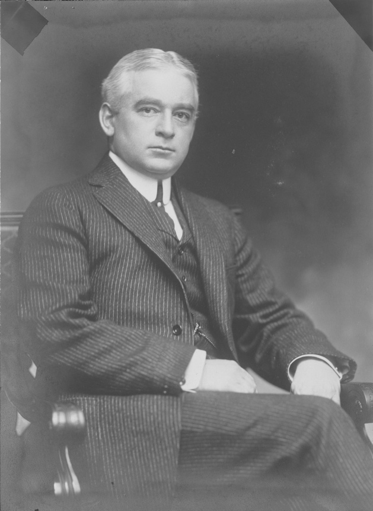
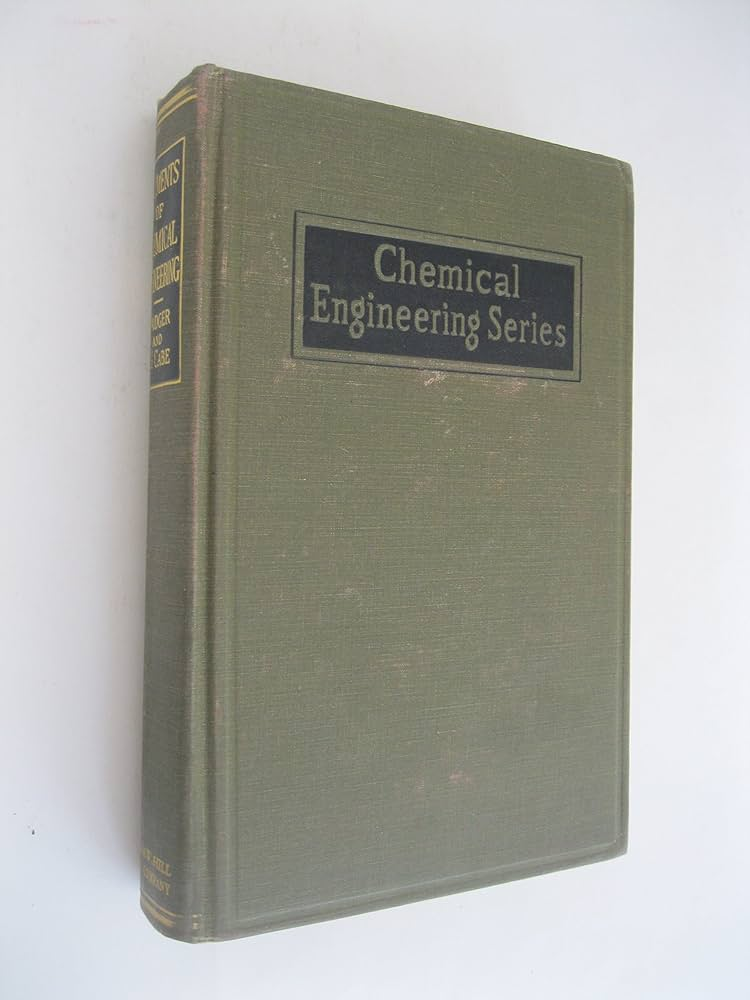
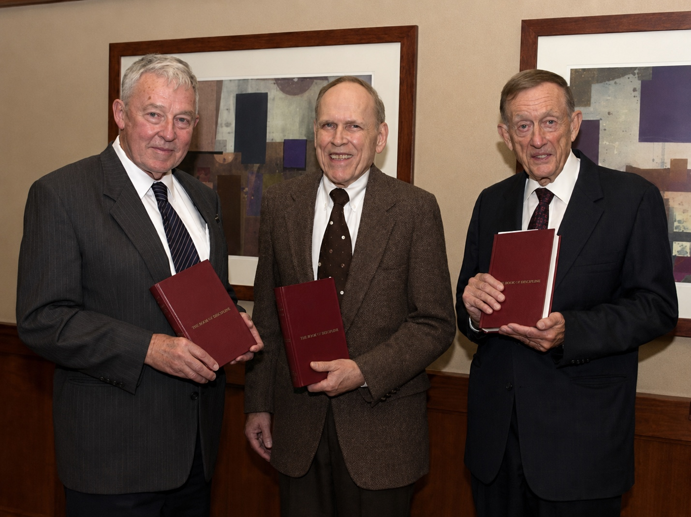

Las operaciones unitarias: historia de un concepto y formas de clasificarlo
Cómo una sola idea ordenó toda la ingeniería química y por qué sigue siendo el primer mapa que usted recibe al entrar en la disciplina.
Una planta que destila petróleo y una fábrica que evapora leche para concentrarla no se parecen en casi nada. Y, sin embargo, en el corazón de ambas ocurre lo mismo: un fluido se calienta, una fase se separa de otra, una corriente se bombea de un punto a otro. Esa coincidencia es la idea que organiza toda la ingeniería química moderna.
En esta lectura
A lo largo del texto encontrará marcadores verdes numerados como este. Pase el cursor por encima (o tóquelo) y aparecerá la fuente completa. El listado ordenado vive al final, en Referencias.
1. Introducción y definición
Una planta que destila petróleo y una fábrica que evapora leche para concentrarla no se parecen en casi nada. Procesan materiales distintos, sirven a mercados distintos y emplean a gente con formaciones distintas. Sin embargo, en el corazón de ambas ocurre lo mismo: un fluido se calienta, una fase se separa de otra, una corriente se bombea de un punto a otro. Esa coincidencia, que durante el siglo XIX pasó casi inadvertida, es la idea que organiza toda la ingeniería química moderna.
Una operación unitaria es un paso físico básico de un proceso industrial, un cambio o una separación de materiales que se rige por los mismos principios científicos con independencia de la sustancia tratada y de la industria que la aplique. Destilar, evaporar, filtrar, secar, transferir calor, mover un fluido: cada una de estas operaciones obedece a leyes físicas idénticas tanto en una refinería como en una planta de alimentos. McCabe, Smith y Harriott las agrupan en cuatro bloques fundamentales:
El valor del concepto está en lo que permite ver. Antes de él, cada industria química se estudiaba como un mundo cerrado, con sus recetas y su maquinaria propias. La noción de operación unitaria reveló que esas industrias comparten un repertorio reducido de procesos comunes, y que dominar ese repertorio sirve para diseñar plantas en cualquier sector. Esto fue lo que separó a la ingeniería química de dos disciplinas vecinas. De la química industrial, porque el objeto de estudio dejó de ser el producto y pasó a ser la operación. De la ingeniería mecánica, porque al diseño del equipo se le añadió el conocimiento de los fenómenos físicos y químicos que ocurren dentro. Britannica resume el alcance con una frase: la clasificación de Little dominó la materia durante los siguientes cuarenta años.

2. Origen histórico del concepto
2.1 · El antecedente: George E. Davis y la ingeniería organizada por operaciones
El nombre lo puso un estadounidense, pero la idea es británica. George E. Davis (1850-1906), inspector bajo el Alkali Act y promotor de la Society of Chemical Industry, dictó en 1887 una serie de doce conferencias en la Manchester School of Technology que se convirtieron en su A Handbook of Chemical Engineering (1901, revisado en 1904), el primer texto de su clase. Davis hizo algo que ningún manual de química industrial había hecho. En lugar de escribir un capítulo por industria, organizó el libro por las operaciones comunes a muchas de ellas: el transporte de sólidos, líquidos y gases, la destilación, la cristalización, la evaporación. Reconoció el patrón. Le faltó solo el nombre.

2.2 · Arthur D. Little y el término, 1915
El término unit operations lo acuñó Arthur Dehon Little (1863-1935), químico, consultor y uno de los seis fundadores del American Institute of Chemical Engineers en 1908. Lo usó por primera vez en un informe de 1915 al presidente del MIT, redactado en su papel de presidente del Comité Visitante del Departamento de Química. La formulación que se ha vuelto célebre aparece en su intervención ante ese comité, donde definió el programa entero de la nueva disciplina:

“Cualquier proceso químico, sea cual sea la escala a la que se lleve a cabo, puede descomponerse en una serie coordinada de lo que cabe denominar operaciones unitarias, como pulverizar, teñir, tostar, cristalizar, filtrar, evaporar o electrolizar.
El número de estas operaciones unitarias básicas no es grande, y relativamente pocas intervienen en cualquier proceso concreto.
Arthur D. Little, citado en Flavell-While (2011)
Conviene anotar una discrepancia menor entre fuentes. Britannica y el Science History Institute datan el informe escrito en 1915; The Chemical Engineer del IChemE sitúa el discurso citable en 1916. Lo más probable es que el informe sea de 1915 y su versión pública de 1916, de modo que ambas fechas describen el mismo episodio en dos momentos.
2.3 · El MIT como laboratorio del concepto
El MIT ya tenía terreno preparado. Su currículo de ingeniería química, el célebre Course X, databa de 1888 y había sido el primer plan de cuatro años del mundo en el campo; los primeros títulos estadounidenses se otorgaron allí en 1891. William H. Walker (1869-1934), doctorado en Gotinga, reformó ese currículo a comienzos de siglo, y bajo la dirección de Warren K. Lewis (1882-1975), doctorado en Breslavia, el curso fundamental de operaciones unitarias se volvió intensamente cuantitativo. La idea se materializó en una institución: la School of Chemical Engineering Practice, con estaciones de práctica en planta donde los estudiantes trabajaban ocho semanas bajo supervisión docente. George Eastman, de Eastman Kodak, la financió con 300.000 dólares. Las fuentes difieren sobre la fecha exacta de apertura, entre 1916 y 1920, probablemente por la distinción entre las primeras estaciones y una refundación posterior.

2.4 · El contexto industrial: por qué hizo falta
La urgencia venía de la industria. A comienzos del siglo XX, la química estadounidense carecía de investigación organizada, y Little lo denunció sin rodeos en su discurso de 1913 ante la American Chemical Society: muchas empresas de naturaleza claramente química no tenían químico alguno. El modelo dominante era el de la química industrial, ligado a la potente industria alemana, que trataba cada producto como un campo separado con sus propios principios: los álcalis por un lado, los ácidos por otro, los colorantes por otro más. Ese esquema fragmentaba el conocimiento y lo ataba a cada fábrica. La noción de operación unitaria invirtió la lógica. Si el refinamiento de petróleo y el procesamiento del chocolate descansan sobre los mismos procesos básicos, entonces conviene enseñar los procesos, no las fábricas. Así, la ingeniería química estadounidense encontró una identidad propia y una razón para existir como disciplina autónoma.
3. Evolución a lo largo del siglo XX
El concepto pasó de una frase feliz a un edificio teórico en menos de una década. En 1923, Walker, Lewis y William H. McAdams publicaron Principles of Chemical Engineering (McGraw-Hill), el primer libro de texto que definió la disciplina a partir de las operaciones unitarias y que incluyó fórmulas para calcularlas. El libro demostró, caso por caso, que industrias dispares comparten procesos que siguen las mismas leyes físicas y los agrupó en cinco clases: flujo de fluidos, transferencia de calor, transferencia de masa, procesos termodinámicos y procesos mecánicos. Fue el texto estándar durante décadas. La profesionalización ya contaba, además, con su casa institucional desde 1908, cuando se fundó el American Institute of Chemical Engineers en una reunión celebrada el 22 de junio de ese año en Filadelfia.
La siguiente generación consolidó el canon. Badger y McCabe publicaron Elements of Chemical Engineering en 1931, antecesor directo de un texto aún más longevo. En 1956 Warren L. McCabe y Julian C. Smith firmaron la primera edición de Unit Operations of Chemical Engineering, al que más tarde se sumó Peter Harriott; el manual sigue en uso, ya en su séptima edición de 2005. En paralelo, Olaf A. Hougen y Kenneth M. Watson, de la Universidad de Wisconsin, publicaron en 1943 Chemical Process Principles, que sistematizó los balances de materia y energía, la termodinámica y la cinética. Hougen y Watson añadieron al andamiaje de las operaciones unitarias la columna de los principios de proceso.



El cambio de fondo llegó en 1960. Ese año, R. Byron Bird, Warren E. Stewart y Edwin N. Lightfoot, también de Wisconsin, publicaron Transport Phenomena (John Wiley & Sons), conocido por las iniciales de sus autores como BSL. El libro había nacido de un curso de pregrado de los años cincuenta que unificaba el flujo de fluidos, la transferencia de calor y la difusión bajo un solo marco. Su tesis reorganizó la enseñanza de la ingeniería química en todo el mundo: en lugar de estudiar cada operación por separado, se enseñan los tres mecanismos comunes que las sostienen, el transporte de cantidad de movimiento, de energía y de masa, en tres niveles, el molecular, el de las ecuaciones de cambio y el de los balances macroscópicos. BSL se mantuvo impreso durante más de cuarenta años y acumuló miles de citas.
Las operaciones unitarias describían el qué: qué hace una columna de destilación, qué hace un evaporador. Los fenómenos de transporte explicaron el por qué: por qué la materia y la energía se mueven como lo hacen dentro de esos equipos. El MIT lideró la primera fase con Walker, Lewis y McAdams; Wisconsin lideró la segunda, primero con Hougen y Watson, luego con Bird, Stewart y Lightfoot. Ambas capas conviven hoy en cualquier plan de estudios.
Línea de tiempo del concepto
4. Clasificación de las operaciones unitarias
Las operaciones unitarias se clasifican de dos maneras complementarias, y ambas describen el mismo conjunto desde ángulos distintos. La primera, más antigua, las ordena por tipo de operación. La segunda, heredada del enfoque de fenómenos de transporte, las ordena según el mecanismo físico que predomina en cada una. Ninguna anula a la otra; juntas conforman una imagen completa.
4.1 · Clasificación por el fenómeno de transporte predominante
Este esquema, consolidado por Bird, Stewart y Lightfoot y por los textos de Geankoplis, agrupa cada operación según el mecanismo básico de transporte que rige el proceso. La asignación se realiza mediante el mecanismo dominante, ya que muchas operaciones involucran a más de uno a la vez.
Tabla 1. Operaciones unitarias según el fenómeno de transporte predominante. Elaboración propia a partir de Bird, Stewart y Lightfoot (1960) y Geankoplis (2003).
| Fenómeno de transporte | Magnitud transportada | Operaciones representativas |
|---|---|---|
| Cantidad de movimiento (mecánica de fluidos) | Cantidad de movimiento | Flujo y bombeo de fluidos, sedimentación, filtración, fluidización, agitación y mezclado, flujo en lechos empacados, ciclones |
| Transferencia de calor | Energía (calor) | Intercambio de calor, evaporación, condensación, ebullición, refrigeración |
| Transferencia de masa | Masa (especies químicas) | Destilación, absorción de gases, extracción líquido-líquido, adsorción, secado, cristalización, lixiviación, humidificación |
Las operaciones que combinan mecanismos requieren un criterio. El secado mueve calor y masa simultáneamente, pero suele clasificarse como transferencia de masa porque el control se centra en la difusión de la humedad. La evaporación también combina ambos y se ubica entre las transferencias de calor, porque el cuello de botella es el aporte de energía. La filtración, la sedimentación y la fluidización son, en cambio, operaciones de cantidad de movimiento sin ambigüedades: lo que gobierna es el flujo del fluido a través del sólido.
4.2 · Clasificación tradicional por tipo de operación
El esquema tradicional, recogido por la Encyclopaedia Britannica y por los manuales clásicos como McCabe, Smith y Harriott, agrupa según la naturaleza de la operación. Es el que más se acerca a la organización de los primeros manuales y sigue siendo útil para organizar un curso o una planta.
Tabla 2. Clasificación tradicional por tipo de operación. Elaboración propia a partir de McCabe, Smith y Harriott (2005) y Encyclopaedia Britannica (s.f.).
| Categoría | Operaciones y ejemplos |
|---|---|
| Operaciones mecánicas | Transporte de fluidos, filtración, sedimentación, fluidización, reducción de tamaño (molienda y trituración), tamizado, mezclado y agitación |
| Transferencia de calor | Intercambio de calor, evaporación, condensación, refrigeración |
| Transferencia de masa (difusionales) | Destilación, absorción de gases, extracción, adsorción, secado, cristalización, humidificación, lixiviación |
| Operaciones termodinámicas | Licuefacción de gases, refrigeración, cambios de fase por aporte o retiro de energía |
| Operaciones de reacción | Reactores químicos; la ingeniería de la reacción química suele tratarse como disciplina aparte |
El diseño de reactores merece una aclaración, porque es el que más confunde. La reacción química no es una operación unitaria en sentido estricto: las operaciones unitarias mueven, calientan o separan materia sin alterar su composición, mientras que un reactor transforma unas especies en otras. Por eso, la tradición la situó en una categoría paralela: primero como proceso unitario y luego como ingeniería de la reacción química, una rama que se consolidó con obras como la de Levenspiel. El reactor suele ser el corazón de la planta, pero su diseño obedece a la cinética y a la termodinámica de la reacción, no a las leyes de transporte que rigen las operaciones unitarias. Ambos campos se estudian y se diseñan juntos; no son lo mismo.
La misma operación ocupa un lugar en cada esquema, donde se evidencia su complementariedad. La destilación es difusión en el esquema tradicional y transferencia de masa en el de transporte. La filtración es mecánica y de cantidad de movimiento. El intercambio de calor es una transferencia de calor en ambos. Conviene tratar la asignación de las operaciones mixtas, como el secado o la cristalización, como una convención didáctica antes que como una ley: el mecanismo controlante depende de las condiciones del proceso, y distintos autores trazan la frontera en lugares ligeramente distintos.
Una última nota sobre el vocabulario. En la literatura reciente, las operaciones de separación tienden a llamarse procesos de separación, un giro visible en el propio título de las ediciones actuales de Geankoplis, Transport Processes and Separation Process Principles. El concepto sobrevive; cambia la etiqueta.
5. Balances de materia y energía
Identificar las operaciones unitarias de un proceso es el primer paso; el segundo es cuantificarlas. La herramienta que permite hacerlo es el balance, y descansa sobre dos principios de conservación que ninguna operación unitaria viola: la materia no se crea ni se destruye y la energía tampoco. Todo el análisis de procesos —dimensionar un evaporador, calcular el vapor que consume una columna, cerrar el inventario de una planta— se reduce a aplicar estos dos balances sobre una región del espacio elegida con cuidado.
5.1 · El sistema, la frontera y la ecuación general
Un balance se plantea siempre sobre un sistema: una porción del proceso delimitada por una frontera imaginaria —un equipo, una sección de tubería, una planta entera— a través de la cual entran y salen corrientes. La pregunta que responde un balance es contable: de la cantidad que se conserva, ¿cuánto entra, cuánto sale, cuánto se genera o se consume dentro y cuánto se acumula? La ecuación general de conservación, válida tanto para masa como para energía, es:
Cada término representa un caudal de la magnitud conservada (masa o energía) referido al sistema durante un intervalo de tiempo. Los términos de generación y consumo solo aparecen cuando ocurre una reacción química; la acumulación es el cambio del inventario dentro de la frontera.
5.2 · Estado estacionario frente a estado transitorio
La distinción más importante para simplificar un balance es el régimen temporal del proceso:
- Estado estacionario: las propiedades del sistema (caudales, composiciones, temperaturas) no cambian con el tiempo. El término de acumulación es cero. Es el supuesto habitual en procesos continuos que operan en condiciones constantes, y es el que se asume por defecto cuando no se dice lo contrario.
- Estado transitorio (o no estacionario): alguna propiedad cambia con el tiempo y el término de acumulación es distinto de cero. Describe arranques y paradas de planta, procesos por lotes (batch) y cualquier perturbación que aleje al sistema del equilibrio operativo.
5.3 · Balance de materia
El balance de materia aplica la conservación de la masa al sistema. Conviene separar dos casos según haya o no reacción química:
Sin reacción química. No se generan ni se consumen especies, de modo que los términos correspondientes desaparecen. En estado estacionario el balance se reduce a que todo lo que entra sale:
- \(\dot{m}_i\): caudal másico de la corriente de entrada \(i\) (kg/s).
- \(\dot{m}_j\): caudal másico de la corriente de salida \(j\) (kg/s).
Este balance global de masa puede acompañarse de balances por componente, uno para cada especie presente, que son la base para resolver mezcladores, separadores y operaciones de transferencia de masa como la destilación o la absorción.
Con reacción química. La masa total se sigue conservando, pero las especies individuales no: unas se consumen y otras se generan según la estequiometría. El balance por componente debe incluir entonces el término de reacción:
- \(\dot{n}_{A,\text{ent}},\ \dot{n}_{A,\text{sal}}\): caudales molares de la especie \(A\) que entran y salen (mol/s).
- \(\dot{r}_A\): velocidad neta de generación de \(A\) por reacción (mol/s); es negativa si \(A\) se consume.
- \(\dfrac{dn_A}{dt}\): acumulación molar de \(A\) en el sistema; vale cero en estado estacionario.
Por eso la reacción química se trata como una categoría aparte de las operaciones unitarias (sección 4): es justamente el término que estas no tienen, porque mueven, calientan o separan materia sin transformarla.
5.4 · Balance de energía
El balance de energía es la aplicación de la primera ley de la termodinámica al sistema. Para un sistema abierto en estado estacionario, despreciando los cambios de energía cinética y potencial, toma la forma:
- \(\dot{Q}\): calor transferido al sistema por unidad de tiempo (W); positivo si entra calor.
- \(\dot{W}_s\): trabajo de eje entregado por el sistema (W), como el de una bomba o un compresor.
- \(h_i,\ h_j\): entalpías específicas de las corrientes de entrada y salida (J/kg).
- \(\dot{m}_i,\ \dot{m}_j\): caudales másicos de entrada y salida (kg/s).
El balance de energía es el que permite dimensionar intercambiadores de calor, evaporadores y condensadores, y el que dice cuánto vapor, agua de enfriamiento o electricidad consume cada operación. Sistematizar conjuntamente los balances de materia y energía fue justamente el aporte de Hougen y Watson que complementó el andamiaje de las operaciones unitarias.
Para resolver casi cualquier balance: (1) dibuje el diagrama de flujo y rotule todas las corrientes; (2) trace la frontera del sistema y decida si hay reacción y si el estado es estacionario o transitorio; (3) elija una base de cálculo (por ejemplo, 100 kg/h de alimentación); (4) escriba el balance global y los balances por componente, y resuelva el sistema de ecuaciones. La mayoría de los problemas de esta disciplina son, en el fondo, este procedimiento.
6. Variables de proceso y sistemas de unidades
Para escribir un balance hace falta medir. Las variables de proceso son las magnitudes que describen el estado de una corriente o de un equipo, y son el lenguaje cuantitativo con el que se especifica, se controla y se diseña cualquier operación unitaria. Toda variable debe ir siempre acompañada de sus unidades: un número sin unidad no significa nada en ingeniería.
6.1 · Las variables fundamentales
Tabla 3. Variables de proceso de uso más frecuente, con su definición y unidades habituales en el Sistema Internacional.
| Variable | Qué describe | Unidad SI |
|---|---|---|
| Temperatura \((T)\) | El nivel térmico; gobierna equilibrios y velocidades de transferencia y de reacción | K (también °C) |
| Presión \((P)\) | La fuerza por unidad de área del fluido; absoluta o manométrica | Pa |
| Caudal másico \((\dot{m})\) | La masa de una corriente que pasa por unidad de tiempo | kg/s |
| Caudal molar \((\dot{n})\) | Los moles de una corriente por unidad de tiempo | mol/s |
| Densidad \((\rho)\) | La masa por unidad de volumen del fluido | kg/m³ |
| Composición \((x_i,\ y_i)\) | La proporción de cada especie en una mezcla (fracción másica o molar) | adimensional |
La composición es la variable que más cuidado exige, porque admite varias formas. La fracción másica es la masa de un componente sobre la masa total de la mezcla; la fracción molar, los moles de un componente sobre los moles totales. Ambas suman uno al recorrer todos los componentes:
- \(x_i\): fracción másica (o molar) de la especie \(i\).
- \(m_i\): masa (o moles) de la especie \(i\) en la mezcla.
Otras formas usuales de expresar la composición son la concentración molar (mol/m³ o mol/L), la concentración másica (kg/m³) y, en mezclas gaseosas, las fracciones expresadas como partes por millón (ppm). Confundir una forma con otra es una de las fuentes de error más frecuentes en los balances.
6.2 · Sistemas de unidades
La ingeniería química convive con varios sistemas de unidades, y traducir entre ellos sin error es una destreza básica:
- Sistema Internacional (SI): el estándar científico y el de uso preferente. Sus unidades base relevantes son el metro (m), el kilogramo (kg), el segundo (s), el kelvin (K) y el mol.
- Sistema CGS: centímetro, gramo y segundo; todavía aparece en propiedades de transporte (la viscosidad en poise o centipoise, por ejemplo).
- Sistema inglés de ingeniería: libra-masa, libra-fuerza, pie, segundo y grado Fahrenheit o Rankine; persiste en la industria de origen estadounidense y en buena parte de la bibliografía de operaciones unitarias.
Conviene distinguir las dimensiones (masa, longitud, tiempo, temperatura) de las unidades que las miden, y separar las cantidades dimensionales de las adimensionales. Estas últimas —como el número de Reynolds o el número de Nusselt— son combinaciones de variables cuyas unidades se cancelan, y son centrales en el análisis de operaciones unitarias porque permiten correlacionar resultados con independencia del sistema de unidades empleado.
Toda ecuación física debe ser dimensionalmente homogénea: ambos lados deben tener las mismas dimensiones. Antes de confiar en un resultado, verifique que las unidades cuadran. Un balance cuyas unidades no cierran está mal planteado, sin importar lo limpio que parezca el álgebra. Herramientas como WolframAlpha o las calculadoras de unidades integradas en Python (por ejemplo, la librería pint) ayudan a comprobar conversiones, pero el hábito de revisar las unidades a mano es insustituible.
7. Conclusiones
La idea de operación unitaria resolvió un problema de organización del conocimiento, y por eso fundó una disciplina. Davis vio el patrón en 1901, Little lo nombró en 1915, y Walker, Lewis y McAdams lo convirtieron en ciencia calculable en 1923. Al reconocer que un puñado de operaciones comunes atraviesa todas las industrias químicas, la ingeniería química dejó de ser una colección de recetas por producto y se convirtió en un cuerpo de principios transferibles.
El concepto sigue vivo en dos planos. En la formación, estructura los planes de estudio: el estudiante aprende primero las operaciones, después los fenómenos de transporte que las explican y, con esa base, puede abordar industrias que aún no existen. En la práctica, aporta un lenguaje común. Un ingeniero que entiende la destilación puede diseñarla en una refinería, una destilería o una planta petroquímica, porque la física es la misma. La irrupción de los fenómenos de transporte en 1960 no derogó las operaciones unitarias; les dio cimientos. Más de un siglo después de la frase de Little, su descomposición de cualquier proceso en una serie coordinada de operaciones unitarias sigue siendo el primer mapa que recibe quien entra en la disciplina.
Saber qué son y cómo se clasifican las operaciones unitarias es, sin embargo, solo la mitad del oficio. La otra mitad es cuantificarlas: plantear balances de materia y energía sobre una frontera bien elegida, decidir si el proceso opera en estado estacionario o transitorio, distinguir cuándo hay reacción química y manejar con rigor las variables de proceso y sus unidades. Sobre ese andamiaje conceptual y cuantitativo se construye todo lo que sigue en el curso.
8. Referencias
Pase el cursor por cualquier marcador del texto para ver la fuente sin perder el hilo. Aquí está el listado completo, en orden alfabético.
- Badger, W. L., & McCabe, W. L. (1931). Elements of chemical engineering. McGraw-Hill.
- Bird, R. B., Stewart, W. E., & Lightfoot, E. N. (1960). Transport phenomena. John Wiley & Sons.
- Davis, G. E. (1901). A handbook of chemical engineering (Vols. 1–2). Davis Bros.
- Encyclopaedia Britannica. (s.f.). Unit operation: Chemical engineering. Recuperado el 3 de junio de 2026, de britannica.com
- Flavell-While, C. (2011). Arthur D. Little: Dedicated to industrial progress. The Chemical Engineer. Institution of Chemical Engineers. thechemicalengineer.com
- Geankoplis, C. J. (2003). Transport processes and separation process principles (4.ª ed.). Prentice Hall.
- Hougen, O. A., & Watson, K. M. (1943). Chemical process principles. John Wiley & Sons.
- Levenspiel, O. (1962). Chemical reaction engineering. John Wiley & Sons.
- McCabe, W. L., & Smith, J. C. (1956). Unit operations of chemical engineering. McGraw-Hill.
- McCabe, W. L., Smith, J. C., & Harriott, P. (2005). Unit operations of chemical engineering (7.ª ed.). McGraw-Hill.
- Science History Institute. (s.f.-a). Arthur D. Little, William H. Walker, and Warren K. Lewis. Recuperado el 3 de junio de 2026, de sciencehistory.org
- Science History Institute. (s.f.-b). George E. Davis. Recuperado el 3 de junio de 2026, de sciencehistory.org
- Walker, W. H., Lewis, W. K., & McAdams, W. H. (1923). Principles of chemical engineering. McGraw-Hill.